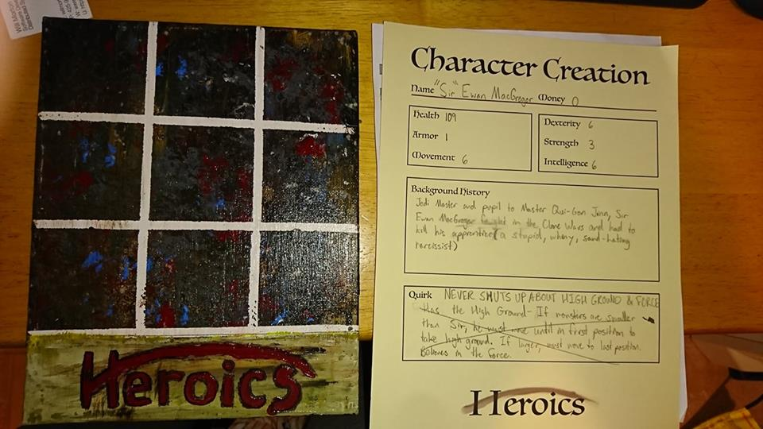
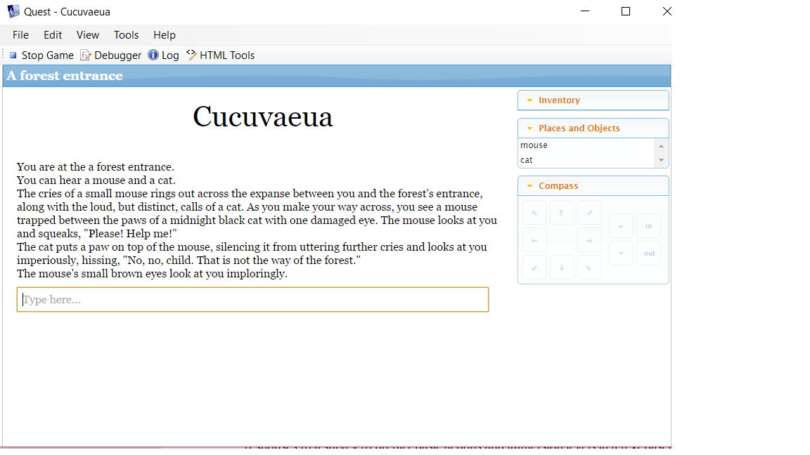
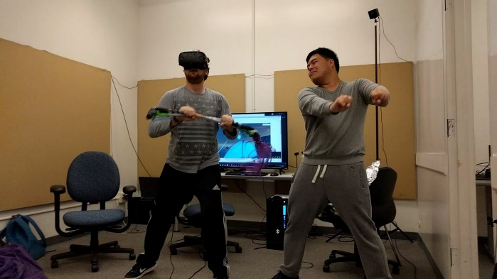
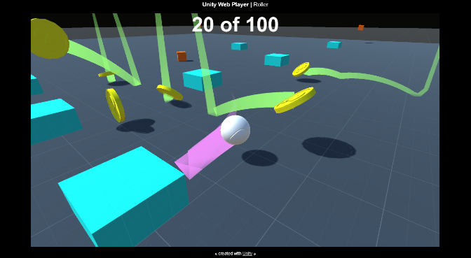

Some personal side projects I'm tackling while working towards my Master's.

Heroics
I acted as the designer, manager, and analyst of this game, and worked with 3 other people. Heroics is a Dungeons and Dragons-like board game with linear grid combat system. I designed it around the question, “What would an adventuring party actually look like if you just recruited people from a tavern wall to ransack a dungeon for treasure?” It turns out, pretty awful.
Players design characters for others to play, with one personality quirk that they have to follow and roleplay, such as constantly having to flirt with teammates or making "gotta go fast" puns. The combat system and board set-up ensures that they constantly work with and against each other, backstabbing at what they might think are key moments. Death in the game just allows players to control the monsters and break off pieces of the board to rearrange players. I’ve attached a link to the instruction booklet here.

Cucuvaeua
I was the designer and manager for this game, and worked with 2 other people. Cucuvaeua is a text based adventure game that was used to psychologically profile gamers and use their responses to a survey to predict basic actions and immersion levels in a text based game.
Players went through a series of difficult choices to make based on either self-preservation or charity, with selfless actions costing you resources. Game development took quite a while in order to make sure that each scenario could answer the questions we had about gamers and whether or not actions could be emphasized to appeal to different types. The survey is available by request.

Astaire
I'm a jack-of-all-trades for this project, operating as manager, designer, and UX researcher. I am currently working with 9 other people. My current project is a co-located social virtual reality game.
Typically, only one person can play a VR game, with very few exceptions, so I decided to try to design a game that allows people not wearing the headset to also enjoy the gameplay. I've done preliminary usability testing on the HTC Vive to understand aspects of the hardware might take away from the game, and am currently using the results adjust the design process. I’m applying IDEO human-centered design methods to tackle physical and virtual limitations. It’s in progress right now, but there should be a prototype of the game done by March 2018. Current design, update, and data documents are available by request.

Unreal and Unity Games
I’ve designed multiple games in Unity and Unreal Engine 4, using both to create anything from basic shooters, to simple models of worlds, to large scale maze games using procedural generation. Each of these games were small projects I attempted in my spare time while studying in preparation for my Master’s degree and were not given names upon completion.